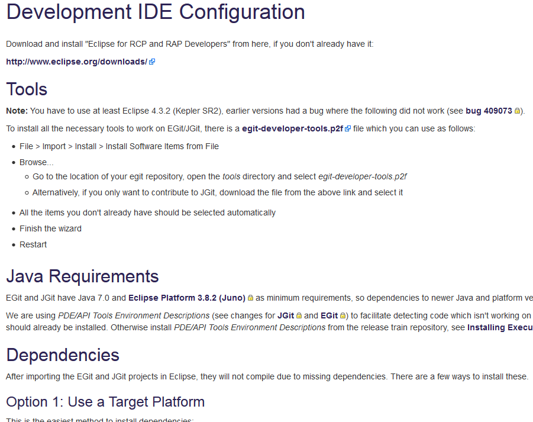
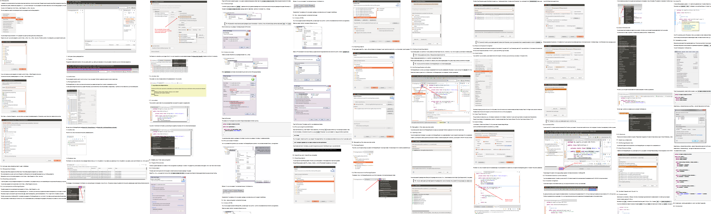
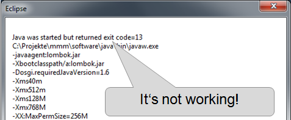
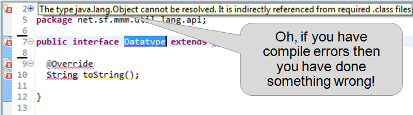
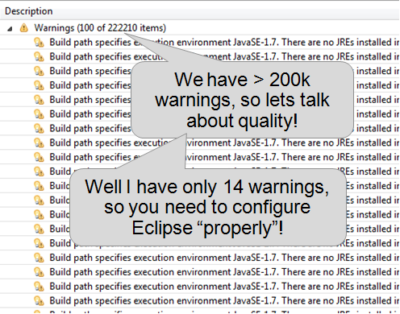
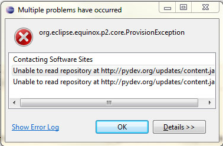
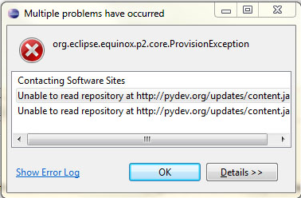
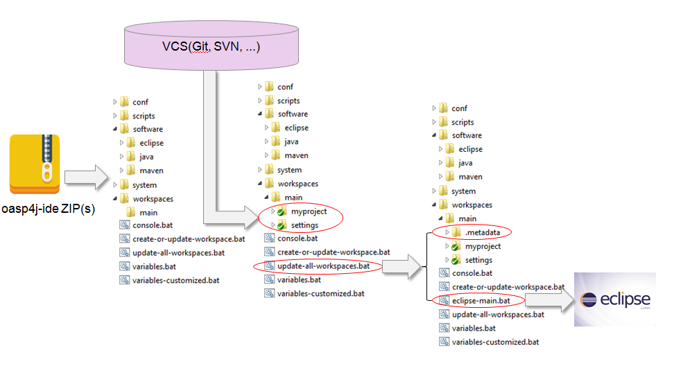

oasp4j-ide
Auto-configured development environment
Jörg Hohwiller

Jörg Hohwiller
- Working with Java since 1.1 (1998)
- Starting with IBM Visual Age 4 Java
- Big lover and hater of Eclipse since 1.x
- Open Source developer
(maven, oasp, mmm, etc.) - Working for Capgemini since 2002
Motivation 1/3
To get started simply follow our instructions
Motivation 2/3
Its easy with our step by step instructions
When you reached step 591 you can start developing.
...if everything went correct
...and you are lucky
Motivation 3/3





 



Requirements
Setup and configure IDE in less than 10 minutes
 Automation to prevent manual mistakes
Automation to prevent manual mistakes
 Easy update of tools+configs during project lifecycle
Easy update of tools+configs during project lifecycle
 Flexibility and easy customization to different needs
Flexibility and easy customization to different needs
 Multiple projects/PC and workspaces/project
Multiple projects/PC and workspaces/project
Desired Result:

Failed Approaches
- Create VM with tools and configs (also Docker+Vagrant)
⇒ VM Overhead? Update during project lifecycle? - Eclipse Plugin (own, workspacemechanic, etc.)
⇒ Insufficient, breaks with every new Eclipse release, etc. - OOMPH
⇒ Documentation? Versions of Plugins? Installation of Java, Maven, NodeJS, ...?
oasp4j-ide Principles
- KISS
- Works with almost any version of Java, Eclipse, etc.
- Installation = Extract ZIP file(s)
- No VM, no system/path/registry tweak
- Setup/Update = Run script
- Project owner is in full control of code-style
- Developer is in full control of UI and personal settings
oasp4j-ide Concept
oasp4j-ide Live-Demo
Questions?
Credits
Thanks to these authors for free icons (slides are GPL):- by Alessandro Rei
- by Pavel InFeRnODeMoN
- by Aha-Soft Team
- by Everaldo Coelho
- by Cole Bemis
 by Paomedia
by Paomedia by VistaICO.com
by VistaICO.com
And of course Screenshots from Eclipse.